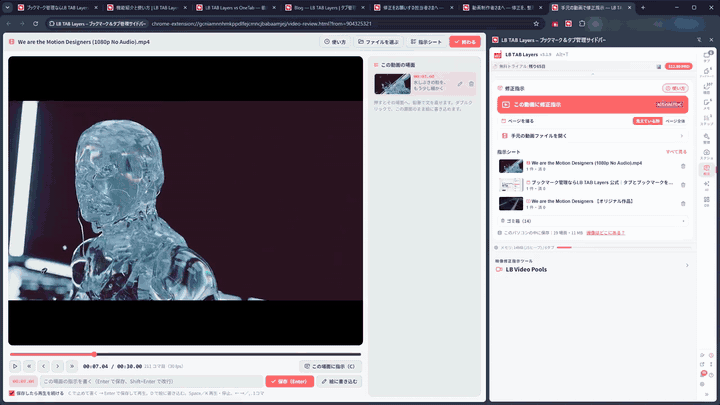
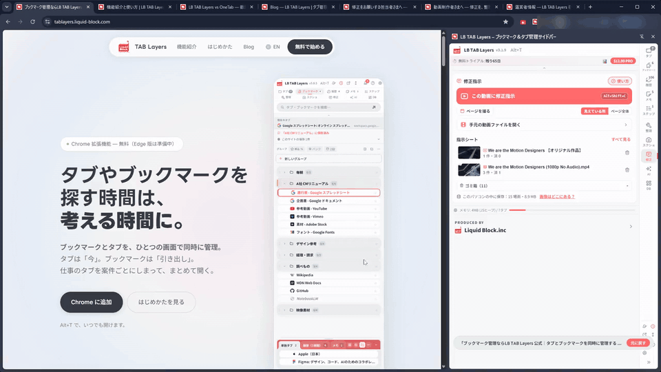
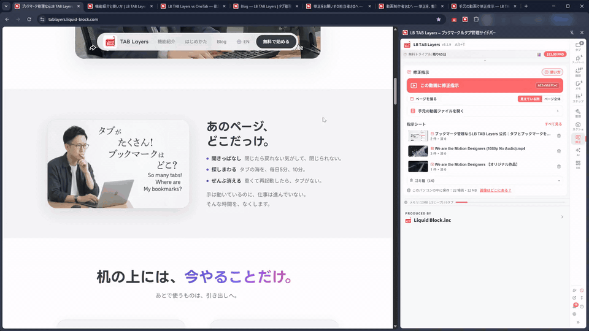
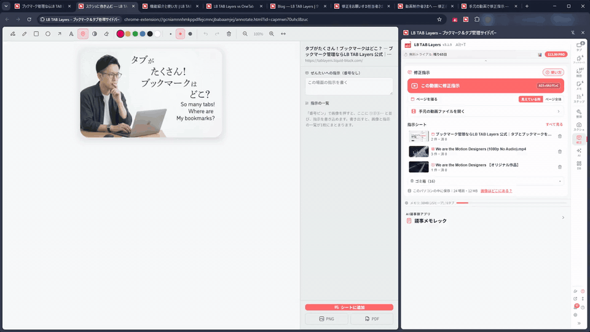
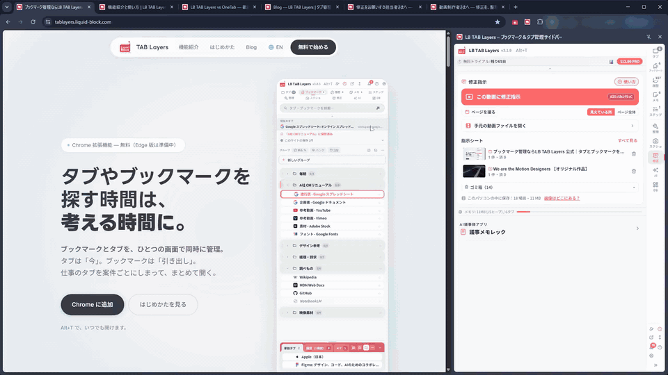
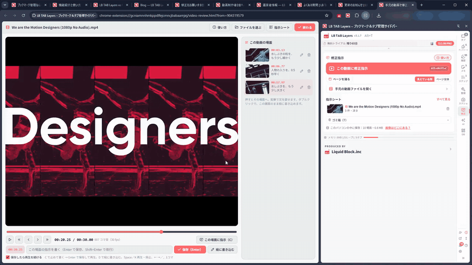
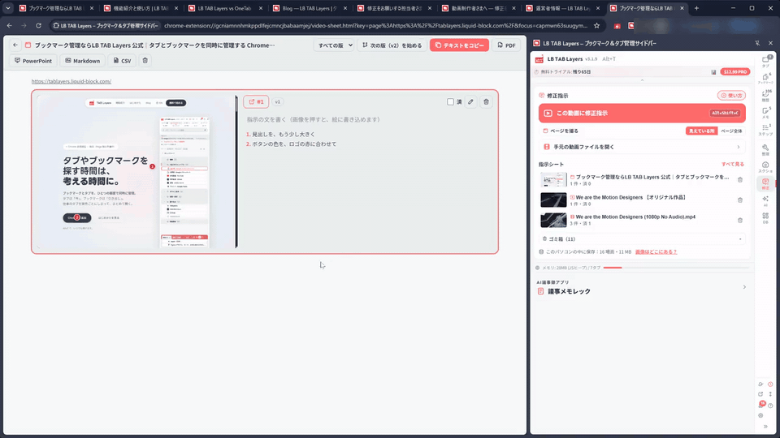
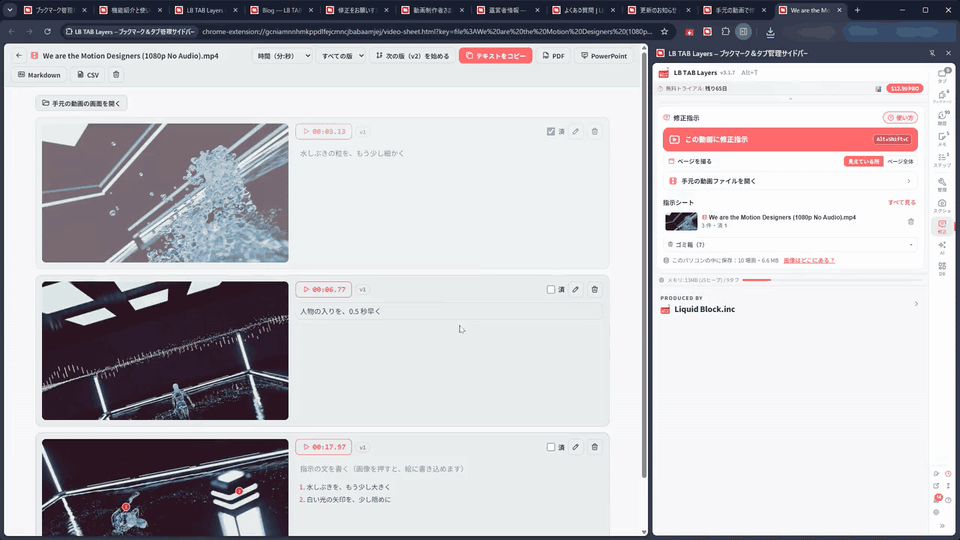
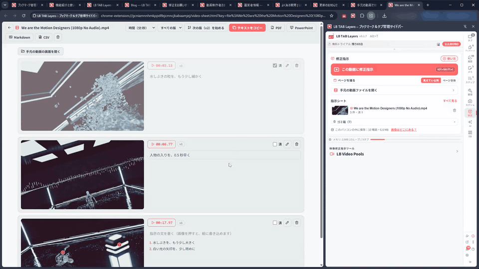
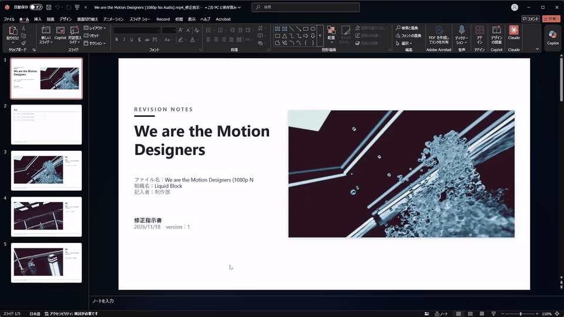

動画を止めて書く PRO
見ている動画を止め、その場面の絵と時刻つきで、指示を書く。Enter で保存して、再生が続く
場所：Alt+Shift+C／「修正」の大きいボタン
動画を見ながら C キー（ブラウザの動画では Alt+Shift+C）で止めると、その場面の絵と時刻が記録され、下に書く欄が出ます。書いて Enter で保存すると、再生が続きます。Shift+Enter で改行します。

見ている動画を止め、その場面の絵と時刻つきで、指示を書く。Enter で保存して、再生が続く
場所：Alt+Shift+C／「修正」の大きいボタン
動画を見ながら C キー（ブラウザの動画では Alt+Shift+C）で止めると、その場面の絵と時刻が記録され、下に書く欄が出ます。書いて Enter で保存すると、再生が続きます。Shift+Enter で改行します。
C で止めて書く、D で絵に書く、, . で 1 コマ、Space で再生。Esc で終わる
場所：動画の下の帯
1 回目の指示のあとは「修正モード」になり、C で止めて書く・D で絵に書く・, と . で 1 コマ・Space で再生と停止が使えます。Esc で終わります。

番号ピン・矢印・四角・丸・文字・ペン・マーカー・ぼかしで、絵の上に書く
場所：書く欄の「絵に書き込む」
書き込みの画面では、番号ピン・矢印・四角・丸・文字・ペン・マーカー・ぼかしが使えます。色は 6 色、太さは 3 つ。番号ピンを打つと、右の一覧にその番号の欄ができます。Ctrl+Enter で保存します。

Web ページを撮って、番号ピンで指示を書く（見えている所／全体）
場所：「修正」のボタン
「修正」の画面の「このページに修正指示」で、見ているページを撮って、書き込みの画面を開きます。見えている所だけか、ページ全体かを選べます。


画像を右クリックして、その画像だけに書く
場所：画像の右クリック


パソコンの動画を開いて、同じように書く。送信はしない
場所：「修正」›「手元の動画ファイルを開く」
パソコンの動画ファイルを開いて、同じように指示を書けます。動画は、このパソコンの中だけで再生され、送信されません。ProRes など、ブラウザで再生できない形式は開けません。

場面を時刻の順に並べる。「この場面へ」で動画に戻る。済のチェック・書き直し
場所：「すべて見る」／保存後の「シートを開く」
指示シートには、場面が時刻の順に並びます。「この場面へ」で動画のその場面に戻り、「済」で直した印を付け、「指示を直す」で文を書き直せます。

「次の版」を始めて、指示を版で分ける。時刻を、秒・コマ数で出す
場所：シートの上
時刻は、分:秒・フレーム数・分:秒:フレームから選べます。「次の版（v2）を始める」で、そのあとの指示が次の版に入り、版ごとに見られます。

テキストをコピー（チャットやメール用）。Markdown・CSV で書き出す
場所：シートの上
「テキストをコピー」で、【修正指示】①②③… の形でコピーします。チャットやメールにそのまま貼れます。Markdown・CSV でも書き出せます。

表紙（作品名・組織名・記入者・日付・版）をつけて、修正指示書にする
場所：シートの上
シートの「PDF を書き出す」「PowerPoint を書き出す」で、表紙・修正箇所の一覧・場面ごとのページの資料になります。表紙の内容は、シートごとに覚えます。



消したシートは 30 日残る。画像は、このパソコンの中だけにある
場所：「修正」の下
動画・手元の動画・ページと画像・保存の場所の案内
場所：「修正」の「使い方」